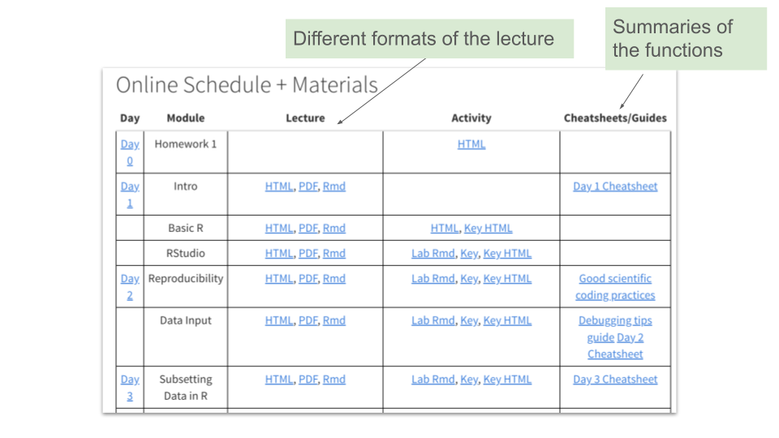
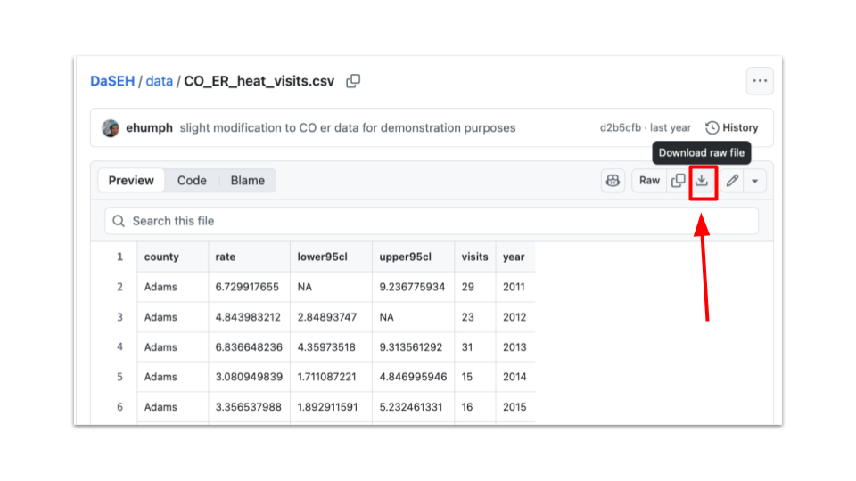
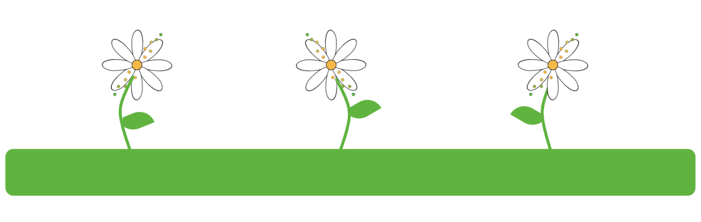

Chapter 2 DaSEH Infrastructure 
2.1 Learning Objectives
In this chapter we will describe the overall infrastructure of the DaSEH Project, which includes:
- The DaSEH website resources
- Topics included in modules (lectures and labs)
- Methods for feedback
- The DaSEH GitHub repository
- The DaSEH Codeathon Resources
- Data used for DaSEH
2.2 DaSEH Website
The DaSEH website describes the mission of the DaSEH project, information for learners to apply to participate, a summary of how the course works, links to our learning content, and links to additional resources. It is built using R Markdown on GitHub at this repository: https://github.com/fhdsl/daseh. It includes Google Forms to gather information or feedback from potential participants. It has several relevant pages:
Home: explains what the course is for and our mission: https://daseh.org/index.html
Apply: links to a form to apply to DaSEH – The link to Google Forms changes periodically, but you can view a static version here
Course Content
- Materials + Schedule: A schedule with links to all of our learning modules (including lab activities and slides) : https://daseh.org/materials_schedule.html
- Course Logistics: information about how people can participate and what is required: https://daseh.org/logistics.html
- Data: links to data used in the course and resources about where to find environmental health data (for projects or extra practice: https://daseh.org/data.html
- Error FAQ: help page for common issues, common errors, navigating challenges, and how to change preferences in RStudio: https://daseh.org/help.html
Support
- Learning Resources: links to extra learning and help, including external vignettes, cheatsheets, and videos of our previous lectures: https://daseh.org/resources.html
2.2.1 Recordings
We like to share recordings of our sessions (using Zoom) with registered learners immediately to:
- Accommodate learners with other commitments
- Allow learners to revisit materials for review after live sessions
- Give learners access to content in the future as a refresher
Recordings also:
- Accommodate independent learners more effectively
- Support instructors (and assistants) who need to refresh their knowledge or are less familiar with the topics
2.2.2 Contact Info
The contact page on the website contains a contact email that may be used to send a message to DaSEH to ask a question or provide suggestions.
2.2.3 Feedback
We are continually striving to make our content better. Please contact us on our feedback form or create an issue on GitHub if you have ideas for suggestions for the project, notice typos or errors, or if you are interested in getting involved.
2.2.4 Survey
There will also be a survey available on our website that allows us to do research on DaSEH resource use.
The survey should take no more than 10 minutes to complete. Your feedback helps us learn more about how to improve our resources. Part of this includes getting a better understanding of who is using our resources and how so that we can better design our materials. We would greatly appreciate you filling it out if you have the time!
2.2.5 Materials
Our modules teach various topics related to data science for environmental health.
Each module has lecture slides built using ioslides and R Markdown. Most have lab activities built using R Markdown.
Raw R Markdown files (.Rmd files) for each lecture session, as well as rendered HTML and PDF versions, are available on the website and our GitHub repository. Labs and lab keys are available in raw R Markdown and rendered HTML formats.
We also include cheatsheets so that learners can review the functions that they learned that day.

2.2.6 Module Summary
-
This module includes the history of R and how it differs from other options like Python or Stata. It prepares students for the course experience and suggestions for how to learn. It also introduces jargon such as “variable”, “row”, “column”, and “object”.
This module does not have a lab.
-
This module covers object assignment, vector creation, and simple calculations.
The lab activity is an HTML webpage (as learners are not yet introduced to Rmd files). Learners practice performing simple mathematical calculation, assigning vectors, and checking the class and length of vectors.
-
This module includes a tour of RStudio, and how to write code interactively and in scripts.
In the lab activity, learners knit the Rmd file, add headers, and practice code chunk functionality: running chunks in the Rmd file, running all previous chunks, and creating new chunks.
-
This module introduces concepts related to repeatability, reproducibility, and replicability. It introduces best practices for improving transparency in our code.
The lab activity features tasks like cleaning the environment, using the
set.seed()function to generate the same random numbers each time, and using thesessionInfo()function to list packages and versions used. -
This module describes how to manually import data using point-and-click methods as well as programmatically (with code) through the
readrpackage. We cover import of.csvfiles and other delimited files (e.g., tab delimited files), as well as tools for importing excel files and SAS, SPSS, and Stata files. We also cover methods for checking your imported data.In the lab activity, learners practice the point-and-click and programmatic methods of data import using
readr. -
This module covers accessing specific parts of a dataset by selecting columns and filtering rows, including AND/OR logic for filtering conditions. We also cover renaming columns (using
rename()from thedplyrpackage andclean_names()from thejanitorpackage) and best practices for naming columns, as this can impact our ability to subset our data. We discuss why pulling the data withing a column of a data frame as a vector is often needed for mathematical operations. In addition, we cover how to arrange/sort data, remove columns, and create columns using themutate()function.The lab activity covers functions like
rename(),rename_with(),pull(),select(),filter()so that learners can practice renaming columns, pulling out a single column as a vector, selecting specific columns, and filtering data based on conditions. Learners also practice creating new columns withmutate(). -
This module covers how to apply mathematical functions to get summary statistics from data including, mean, standard deviation, range, max, and min. We show how we can pull the data out as a vector to use these functions or we can use the
summarize()function on columns of a data to create a new data frame with summary statistics. We also talk about thesummary()function to find quantiles of data quickly.In the lab activity, learners find the dimensions of the data, use the
count()function to summarize the data, usepull()and mathematical functions likesum()to calculate summaries of columns, as well as use thesummarize()function to summarize the data. -
This module covers information about different types of data classes and how to coerce data from one data type to another. We cover numerical data, character data, logical data, double precision data, integer data, factors, and dates. We also touch on lists and matrices.
In the lab activity, learners check the class of several vectors including those that look very similar, such as a character and logical version of “TRUE” and “FALSE”, conversion of a vector to a different data type, and conversion of a column to a new data type within a data table.
-
This module covers how to find and work with missing data using the
naniarpackage andcount(), how to recode missing data or recode data asNA, and how to recode specific values of a column or create a new column based on conditions of other columns using thecase_when()function. We also cover how to separate or unite columns and how to usestringrfunctions to help modify values or find specific values based on partial patterns.In the lab activity, learners evaluate the missing data within a dataset and recode messy data. For example, correcting mixed values “n, N, and”No” to indicate “no exposure”.
-
This module covers how to rearrange data into long or wide format. We discuss how wide format can be useful for human interpretation and how long format is typically better for analyses and data visualization in R. We also discuss how to join/combine different datasets and describe why one might want to do this.
In the lab activity, learners use functions like
pivot_longer()andpivot_wider()to change the shape of a dataset. They also practice doing joins of datasets together and comparing how the different joining functions work. -
This module gives learners a taste of data visualization by using a point-and-click option from the
esquissepackage. This can help learners quickly attempt data visualizations and copy data visualization code.In the lab activity, learners get to try out creating different plots with
esquisse. -
This module dives deeper into best practices for data visualization, how to make a
ggplot2plot, and more customization options for creating data visualizations, such as usingthemes, how to troubleshoot common issues in visualizations, as well as how to make plots interactive or how to combine plots using other packages likeplotlyandpatchwork.In the lab activity, learners practice making plots directly with
ggplot2, practice applying new themes to their plots, and add facets to their plots. -
This module covers why factors require special handling and allow for meaningful ordering of summaries, analyses, and visualizations. We show how to use the
forecatspackage to reorder factor variables.In the lab activity, learners convert a variable to a factor and specify new levels for the variable. They also discover how this changes the order of the variable values within data summaries and plots, when compared to character type data.
-
In this module, we describe how statistical tests like t-tests, correlation, and regression are performed within R. We do not focus on the statistical interpretation, but rather how one can use R tools to perform statistical test and get the results.
In the lab activity, learners perform a correlation test between two vectors, perform a t-test, and perform regressions (including a logistic regression).
-
In this module, learners discover that they can save their processed data as
.rds(R native) or.csvfiles so that they don’t have to rerun processing on data (especially if it is large) or if they want to share data with others.In the lab activity, learners write a csv and RDS file. They also read an
.rdsfile back into R. -
In this final module, learners discover the power of writing their own functions. They also learn about using
applyfunctions andacross()to iteratively apply the same function across different columns within a data frame. We discuss why reducing repetition can improve the quality and efficiency of their code.In the lab activity, learners create their own simple functions and use the
across()function to summarize different columns of a dataset, as well as apply a new function on the specific columns of dataset.
See DaSEH in the Classroom for more information about the timing/length of these modules.
2.3 Slide Structure
Overall our slide structure involves the following components:
A recap of the previous day (where appropriate)
Context about why the particular topic matters or why someone might need to know the material
Overviews of functions and the typical command structure to use such functions
Formative Gut Checks to help gauge student comprehension and to help learners stay engaged
- For Gut Checks, it is good to keep the question very simple and fundamental. That makes people feel successful as they work engage with the lecture and helps reinforce the most fundamental information.
Examples using simple data
Applied examples with real data (where possible)
- Sometimes it is difficult to get a dataset that suits all your needs. In those cases, we make it clear that the data was created by us. This data is shared on our website for easy access and use.
Cautionary examples of what can go wrong
A summary of what we discussed
- We also include links to other resources, such as Open Case Studies or Posit Cheatsheets
2.4 DaSEH GitHub Organization
GitHub is a website and cloud service that enables developers to store, manage, and track changes to their code. DaSEH uses GitHub for both development and distribution purposes. Users have complete access to all DaSEH course materials at our course website repository, feel free to explore!
This diagram explains the folder structure of our materials:
![The folders on github of our resources, it shows that the main folders of interests are the data folder, which has all the data from the course, and the modules folder which has all the labs, lectures, and homework content, in addition, most of the free files make up the website pages, beyond that there are other folders that help in creating the website or rendering the content, including the docker folder for creating the environment to render everything on GitHub, the github workflows folder has files for building the website from the OTTR project, the docs, site_libs, and help_files folders have files from rendering, the images folder has images for the course and website content, the resources plage has files for helping wwith settings for rendering, like the dictionary for checking spelling, the scripts page has scripts for automating aspects like making lab files for students without the answer form the key](02-daseh_infrastructure_files/figure-html/1vCiMPvvsdwQjiMWjf0YuSpTkG0DGXsy1614cRiFc7ns_g3b1c31cfa63_0_80.png)
2.5 Codeathon Resources
In addition to the modules covered in the online course, we cover some content during our codeathon. You can find these materials on Google Drive, including our introduction, conclusion slides, and slides to accompany “stand-ups” to get people talking about their work.
2.5.1 Codeathon Slides
Our Codeathon slides cover:
-
- This resources discusses the basics of using GitHub/Git and R. It includes how to make a new repository, how to upload files to GitHub, like data or code, how to set up usage of git on your local computer, and how to push changes from your local computer to GitHub.
-
- This resource covers places to find data to perform environmental health data science research.
-
- This resource includes the basics of how to do code review on GitHub, including the use of GitHub issues.
-
- This covers information about AI use, data protection, data privacy, data provenance and more.
-
- This covers different tools available to make maps in R, the basics for making map plots, as well as tips and resources.
2.5.2 Codeathon Schedule
Here you can see the schedule from one of our past DaSEH codeathons.
2.5.3 Stand-ups
To facilitate participants communicating with us and one another, we held regular “stand-ups” where participants stood in a circle and shared progress and challenges. We modeled these brief check-ins after stand-up meetings in the software development sphere.
These stand-up check-ins are opportunities for participants to pause and reflect on how their work is going and share that information with others. During the codeathon, learners would take turns talking about what was going well, what was not going well, what they were currently working on, and if they could use help or if they were interested in collaborating.
We often discovered that many of the participants would have common interests or challenges, leading to peer support (e.g., sharing resources) or tackling a problem together. We would encourage learners to help others, as this process can really solidify understanding of a topic. We believe this can also lead to new collaborations between professional learners.
Stand-ups also allowed us (the instructors) to determine who might need extra assistance and what kind of resources we might share with them.
Importantly, stand-ups also helped participants get to know one another, think about next steps, consider pivoting if needed, and take a break from mentally challenging tasks. These are key decision making skills in real environmental health settings we felt were important to discuss.
Feedback from participants suggests that they really enjoyed the stand-up process.
2.6 Data
All of the data used in the modules are hosted in the GitHub repository within the data folder. This data can be reused separately outside of our our module materials.
To use the DaSEH data, you can:
- Interface with the data in R via URL
- Download data via URL on the website Data page
- Download the full DaSEH GitHub repository and find the data in the folder or directory called data.
- Directly download individual files by searching through our data directory on GitHub, clicking on a data file and the clicking the download raw file button.

Information about the which modules certain data are used in, as well as information about the data sources, can be found here. This page also includes other relevant datasets which can be used to develop or adapt course materials, such as for homework assignments, extra practice, or projects.
2.6.1 Adapting Materials
If you are interested in creating a similar website from our course materials or you want to take our lecture slides and adapt them, you can do either of the following:
Download the full DaSEH GitHub repository and find the file ending in .Rmd in the folder or directory called Module to copy paste our code and slide comments.
Directly download individual files by searching through our module directory on GitHub, clicking on a data file and the clicking the download raw file button.
More information about how to adjust the individual files will be described in the DaSEH modification chapter.

This work is licensed under a Creative Commons Attribution-NonCommercial-ShareAlike 4.0 International License.
 DaSEH is funded by the National Institute of Environmental Health Sciences 1R25ES035590-01.
DaSEH is funded by the National Institute of Environmental Health Sciences 1R25ES035590-01.